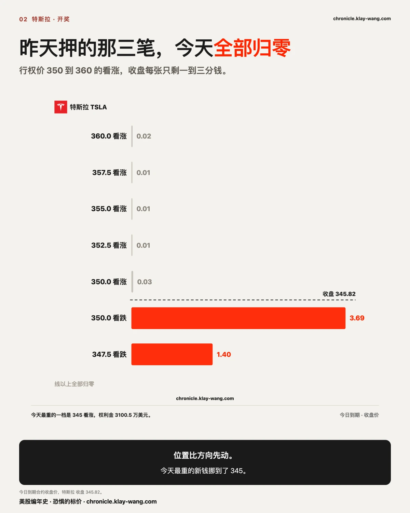
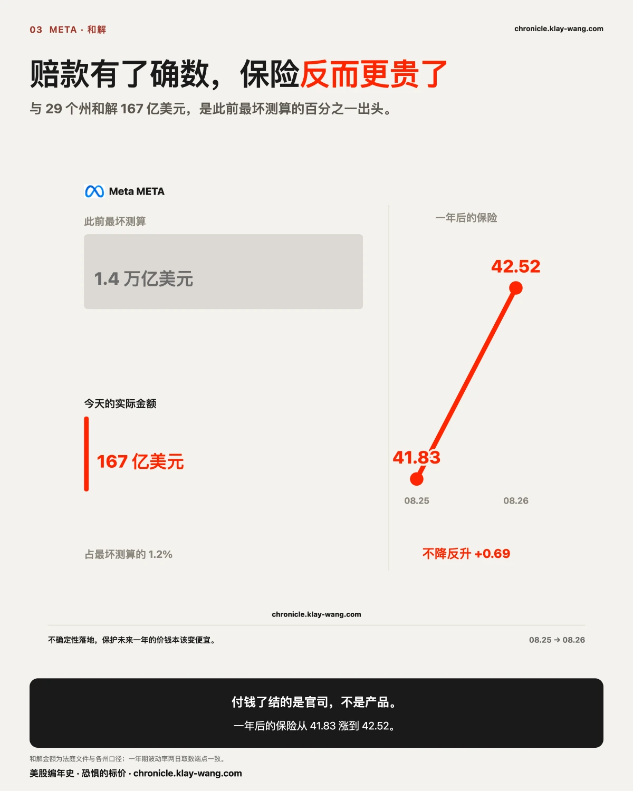
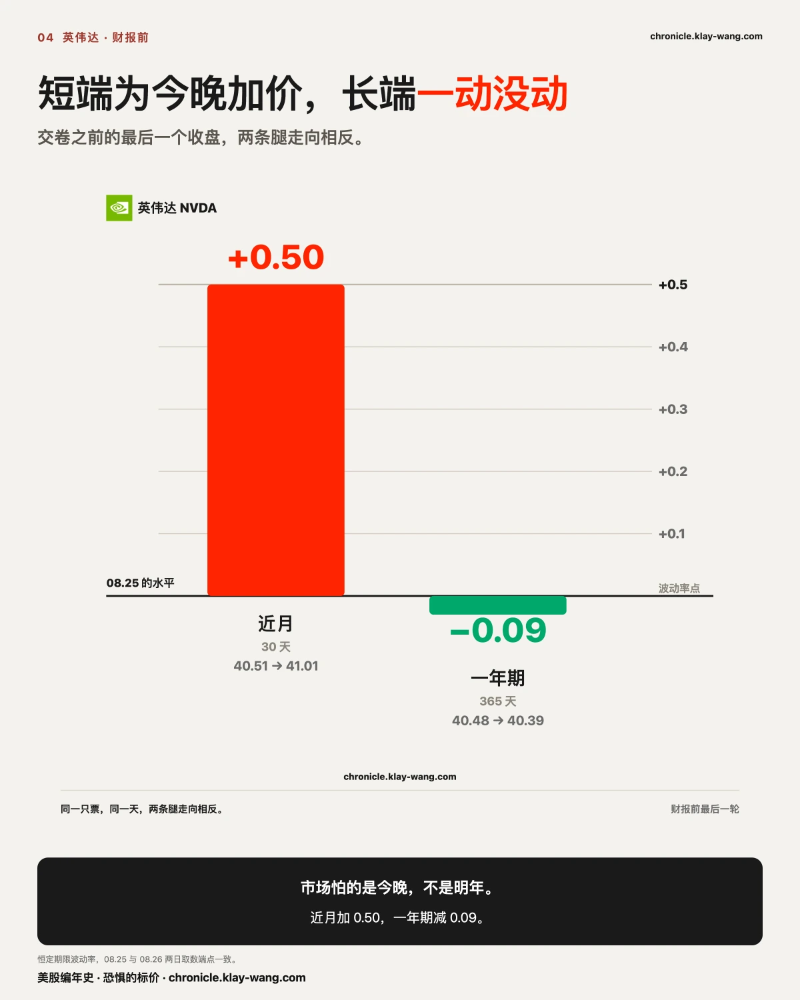
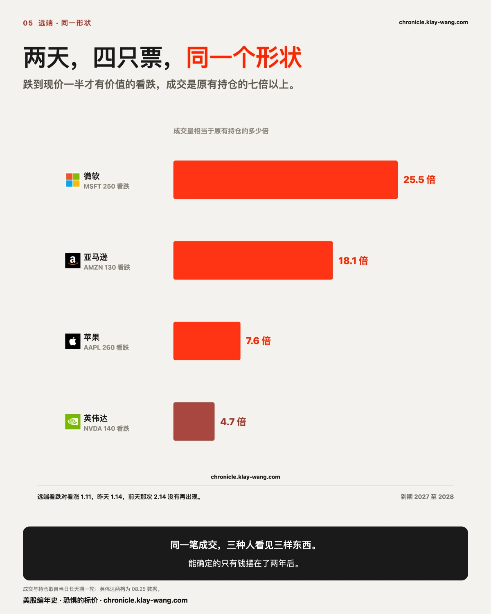
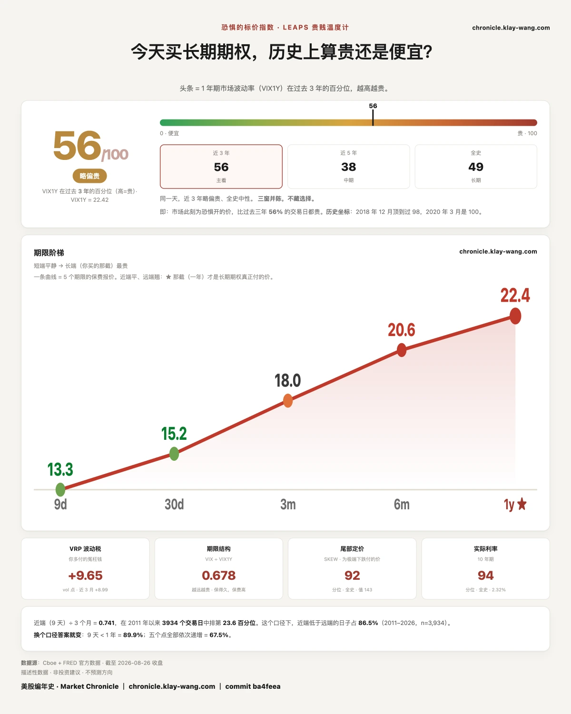

三件大事撞在同一天，市场居然一动没动？ · 8.24-8.28
⚡ 三行速览
- 今天同时是通胀数据日、英伟达财报日、Meta 和解日，而市场的回答是 +0.02%。 十一个行业板块里最好与最差相差 2.09 个百分点。不是不在乎，是要动的那一下在今晚之后。
- 昨天押在特斯拉 350 到 360 的三笔看涨，今天收盘全部归零，最高的一档只剩 0.01 美元。今天最重的新钱挪到了 345，比昨天那批低了一整档。
- Meta 赔多少钱今天有了确数，而它一年后的保险反而更贵了：一年期波动率从 41.83 走到 42.52。官司了结了，条款里那些产品改动没有数字。

一 · 今天什么都没发生，因为今天不是那个日子
早上八点半，7 月核心 PCE 公布：同比 3.30%，前值 3.30%，一格没动。同一批数据里，二季度实际 GDP 修正值 1.5%，与初值一致。下午四点二十，英伟达交出财报。中间还夹着 Meta 与 29 个州达成和解。
三件事撞在同一天，市场的回答是 +0.02%，纳指那只 +0.09%。十一个行业板块，最好的 +1.09%，最差的 −1.00%，没有一个动过 1.1%。恐惧的价格收在 15.21，比昨天还低了 1.55%。
我们跟踪的十七只里，十一只涨六只跌，最好的闪迪 +1.26%，最差的英伟达 −1.59%，两头相差 2.85 个百分点。在自己交财报的这一天，英伟达是全场最弱的那一只。
通胀这个数值得单说一句，因为它今天被两种人读成了两件事。 有一批机构等的是回落到 3.20%，另一批等的是维持 3.3%。实际值 3.30%，对后者是符合预期，对前者是没能如期回落。同一个数字，取哪一把尺子，结论正好相反。一个月里，9 月加息的定价从七成走到两成半又走回四成，而这个数字两个月一格未动。
真正说明今天性质的不是指数，是钱押在哪一天。 今天到期较近的那批合约，期权权利金合计 15.343 亿美元，与昨天的 15.19 亿几乎持平。但拆开到期日：10.337 亿压在 8 月 28 日，3.755 亿压在今天，只有 0.969 亿留给 9 月 4 日。最高一档的异常合约 61 笔，其中 53 笔到期在本周。
昨天这个数是 8.853 亿。在财报交卷之前的最后一个交易日，押后天的钱又加了 16.8%。
二 · 昨天押在上面的那三笔，今天收盘全部归零
昨天这里写过，特斯拉把今天定成了全场最贵的一天：八笔最高等级的合约全部到期在今天，行权价铺在 350 到 360 之间，看跌五笔约 1.14 亿美元，看涨三笔约 7400 万，两侧一起买。当时的判断是，两侧一起买，买的是那一天会动；看跌那侧重一半，谨慎多过兴奋。
今天收盘，那批合约的价钱是这样的：
| 行权价 | 类型 | 今日收盘价 |
|---|---|---|
| 350 | 看涨 | 0.03 |
| 352.5 | 看涨 | 0.01 |
| 355 | 看涨 | 0.01 |
| 357.5 | 看涨 | 0.01 |
| 360 | 看涨 | 0.02 |
| 347.5 | 看跌 | 1.40 |
| 350 | 看跌 | 3.69 |
看涨那三笔全部归零，看跌那侧留在实值。 昨天那句谨慎多过兴奋，今天收盘对了。

但今天更值得看的是新钱去了哪。 今天特斯拉的期权权利金 2.697 亿，全场第一，占 17.6%。而最重的一档不再是 350，是 345 看涨，成交 218348 张，权利金 3100.5 万美元；第二重的是 342.5 看涨，1058.9 万。
昨天的钱铺在 350 到 360，今天的钱铺在 342.5 到 345。价格往下走了一档，钱跟着往下挪了一档，没有人守在昨天那个位置上加码。
这里更正一处我们自己的口径，当期认。 昨天给这八笔写的检验条件是，当日振幅超过隐含幅度就是付钱的一方赢。那把尺子用错了：那个隐含幅度的口径是到 8 月 28 日的三天，不是单日。当日到期的合约不需要这把尺子，收盘价落在哪里就是答案。今天按收盘价对，结论不变，但检验条件本身记一次错。
三 · 赔多少钱有了确数，一年后的保险反而更贵了
今天 Meta 与 29 个州总检察长就青少年社交媒体危害案达成和解。金额有三个版本：法庭文件与各州口径是 167 亿美元，Meta 自己的声明写的是约 180 亿，分十年逐年支付，另有 171 亿的口径在流传。三个数字差 13 亿。分十年付的名义总额与一次性口径本来就不是同一个数，至于差额从何而来，公开材料没有给出对应关系。
今天早上还在流传的另一个数字是 1.4 万亿：那是此前测算的最坏情况下的赔付上限。今天这件事的价钱，是那个数的百分之一出头。
以上是新闻。下面是同一天的期权定价。
Meta 一年后的保险今天变贵了。 一年期波动率从昨天的 41.83 走到今天的 42.52。两天的取数端点完全一致，这个比较是干净的。
这一层值得停一下。今天落地的是一个尾部风险：一件悬着的、金额不封顶的官司，变成了一个写在纸上的数字。按常理，不确定性消失了，保护未来一年的价钱应该变便宜。它反而更贵了。
价格在说的是：付钱了结的是官司，而和解条款里那些产品改动，未成年人每日使用时长限制、夜间禁用时段、强化年龄核验、家长工具，改的是产品本身。赔款有确数，产品改动没有。

今天盘中还有一件事，只有把成交量摊开才看得见。 今天全场清淡，主要几只票半天只走掉两三成的常态量。而 Meta 半天就走了一倍二三的量，是全场唯一放量的票，日内从 561.88 一路到 593.34，宽度 5.52%。在一个没有任何板块动过 1.1% 的日子里，市场只在一只票上真的动了。
它今天的期权权利金 2.367 亿，全场第三。而买进去的是什么：盘中最重的几档是当天到期和后天到期的虚值看涨，成交是持仓的七到八倍，但每一档的钱只有几十万到一百多万美元。张数很大，钱很少，赌的是今天下午。给一家万亿级公司重新定价的钱，不长这个样子。
四 · 短端在为今晚加价，长端一动没动
英伟达今天的期权权利金 2.481 亿，全场第二，占 16.2%。昨天它一家占 20.7%，前天占 78.3%。
在财报之前的最后一轮定价里，两条腿走向相反：近月的波动率从 40.51 走到 41.01，一年期的从 40.48 走到 40.39。
短端为今晚加价，长端往下挪了 0.09。昨天这里写过一句，市场怕的是明晚，不是明年。在交卷前的最后一个收盘，这句话又被写了一遍。
现货那边给的是另一个答案：它今天收 209.66，跌 1.59%，是十七只里最弱的一只。在交卷之前，市场先把它卖了一把。

今天早上还结清了两笔昨天挂出来的账。
谷歌 2027 年 3 月那两条腿，480 看涨与 270 看跌各 5500 张，昨天判不了是一个整体结构还是两笔独立的钱。今晨结算：480 看涨的持仓从 563 涨到 5844，270 看跌从 2751 涨到 7427，各自留下了昨日成交的 96.0% 与 85.0%。两腿同时住下了。 两腿昨天成交量完全相等，留下的张数差了 605 张，那 605 张是当日来回还是原有持仓平掉，成交记录不区分。
英伟达 2027 年 1 月那档 460 看涨，昨天成交 1.13 万张，比当时持仓还多。今晨结算：持仓从 11626 涨到 18274，留下了昨日成交的 59.1%。 既没有回到原位，也没有全额住下。六成留下，四成当日来回，落在中间就写落在中间。
五 · 两天，四只票，同一个形状
昨天英伟达那两档跌五成才有价值的看跌，21.8 万张，今晨证实几乎全额住下。今天同样的形状出现在另外三只票上：
| 标的 | 到期 | 行权价 | 今日成交 | 昨日持仓 | 倍数 |
|---|---|---|---|---|---|
| 微软 | 2028 年 1 月 | 250 看跌 | 67230 | 2642 | 25.4 |
| 亚马逊 | 2028 年 1 月 | 130 看跌 | 12661 | 700 | 18.1 |
| 苹果 | 2028 年 12 月 | 260 看跌 | 15006 | 1973 | 7.6 |
微软今天收在 497 上方，那档看跌的行权价是 250。三档的行权价都在各自现价的五成上下，到期都在一年半到两年半之后，成交量都是原有持仓的七倍以上。

同一笔成交，三种人看见三样东西。 做尾部对冲的人看见的是一份很便宜的远期保护；做价差的人看见的是自己那笔组合里的一条腿；卖出这些合约收权利金的人看见的是一笔到期还很远的负债。在成交记录里，这三者长得一模一样。
能确定的只有一件：两天之内，四只市值最大的公司，都有人在两年后那个位置上摆了钱，而且量都远大于原来趴在那里的持仓。 这几笔明晨结算之后会知道它们是不是也住下了。
顺带回答一个每次都会被问到的问题：这些是不是一两笔大单干的。 本周五到期那几档做过分散度检验：闪迪 1500 看涨分散 19.3%、1500 看跌 23.5%，英伟达 210 看涨 16.4%，都不是被少数几笔垄断的。英伟达 210 看跌那一档测不了，成交明细只覆盖到 75.5%，分母不够就不下结论。
顺带一提，远端那个看跌对看涨的比值今天是 1.11，昨天 1.14。前天那次冲到 2.14 的尖峰，两天都没有再出现，那次确认是月度到期次日的一次性摆放，不是延续的行为。
六 · 跌得最多的那只，没有人为它下注
博通今天的期权权利金 0.2513 亿，占全场 1.64%，在十七只里排第十二。昨天它是 0.1669 亿，占 1.1%，也是第十二。
它的钱其实多了五成，位次一步没动。 两天覆盖的到期日完全相同，这个比较没有换尺子。全场都在加注，它加的那点刚好够留在原地。
昨天这里给它写过一个检验条件：如果今天跳进前五，说明那条芯片消息只是消化得慢；如果仍在十名开外，说明市场对它的定价已经做完。今天的答案是后者。
同一天，它的期限倒挂继续走宽：近月比一年期高出 3.17 个点，昨天是 2.69。拆开看，近月加了 0.37，一年期撤了 0.11，两头各出一半。
一只票可以同时是价格最弱的和最没人下注的。 这两件事凑在一起的时候，市场表达的不是分歧，是没有兴趣。
七 · 这对你手里的票意味着什么
手里有特斯拉：昨天铺在 350 到 360 的看涨今天全部归零，今天的钱铺在 342.5 到 345。价格往下挪了一档，付钱的人跟着挪了一档。位置比方向先动。
手里有 Meta：赔款今天有了确数，而给它一年后买保护的价钱变贵了。官司的账结了，产品改动的账还没有数字。
手里有英伟达，或者跟着它的财报做事：交卷前最后一个收盘，短端加价、长端不动，钱压在后天而不是今天。今晚之后的重新定价，明天这里回来对。
手里什么都没有，在等：今天三件大事同时落地，市场一动没动。在这种日子里，最有信息量的不是价格，是有人为哪一天付了钱。
三句话，值得带走
今天同时是通胀数据日、财报日和一桩 167 亿美元和解的落地日，而十一个行业板块没有一个动过 1.1%。要动的那一下不在今天。
昨天押在特斯拉 350 到 360 的三笔看涨今天全部归零，最高的一档只剩 0.01 美元；今天最重的新钱挪到了 345。位置比方向先动。
Meta 赔多少钱今天有了确数，它一年后的保险反而从 41.83 涨到 42.52。付钱了结的是官司，条款里那些产品改动没有数字。

恐惧的标价指数（Fear-Price Index）· 2026-08-26 · 读数 56/100：一年期波动率 VIX1Y 为 22.42，处于近三年第 56 百分位，高即贵。逐日台账与口径 → chronicle.klay-wang.com · 转载注明：恐惧的标价指数 · Market Chronicle
预告与下一期回访
远端那三笔深度虚值看跌（微软 2028 年 1 月 250 看跌、亚马逊 2028 年 1 月 130 看跌、苹果 2028 年 12 月 260 看跌）：明晨结算后，持仓对今日成交向 1 靠近算新建仓住下，回落到原位算当日来回。最晚 8 月 27 日早晨取，持仓没有历史查询，过期按老规矩放弃并说明。
英伟达财报之后的一年期：今天收在 40.39。若明天跳升超过两个点，那么今天的按兵不动只是事件前的观望；若仍在 40 上下，则长端从头到尾没把这次财报当成会改变一年格局的事。取自同一张表同一档。
这一条今晚已经有了新的分量。 财报在收盘后交出：单季营收 962 亿，同比翻倍多；下一季指引 1080 亿；公司还罕见地提前一年给出指引，说下一个财年增长约七成，而分析师此前预期是四成出头。以上是据公开报道，本刊的数据到今天收盘为止。一个把明年增速预期抬高近三成的消息，长端该不该重新定价，明天那个读数说了算。 我们今天把 40.39 印在这里，明天回来对。
8 月 28 日那一档的 10.337 亿：今天是在财报之前又加了 16.8%。明天才是真正的开奖，财报之后若较今日下降过半，这一周的集中就只是事件前的排队；继续增厚则买的是财报之后那一段。
Meta 的一年期 42.52：若明天回落到 41.83 下方，今天这一跳只是和解当天的噪音；若继续走高，则产品改动那部分账单正在被慢慢标价。
博通的位次与倒挂：今天第十二、倒挂 3.17。若倒挂在本周内收回到 2.0 以下，那么这一轮走宽只是消息周的临时定价；若继续走宽，则撤掉一年后风险溢价这件事还没做完。
本站不提供投资建议，不预测方向，不做择时。